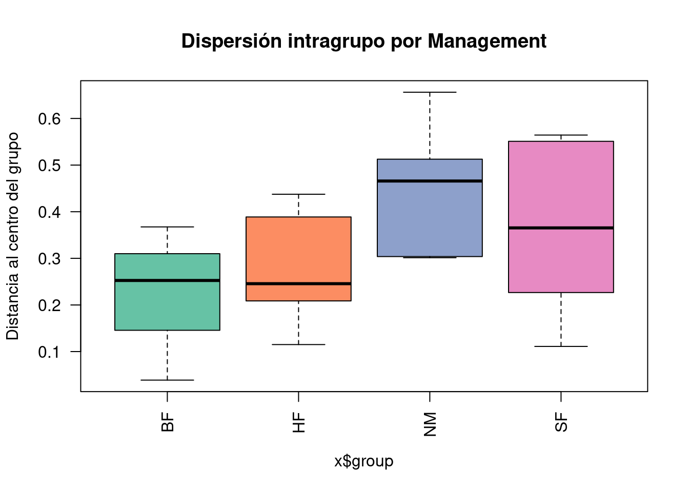
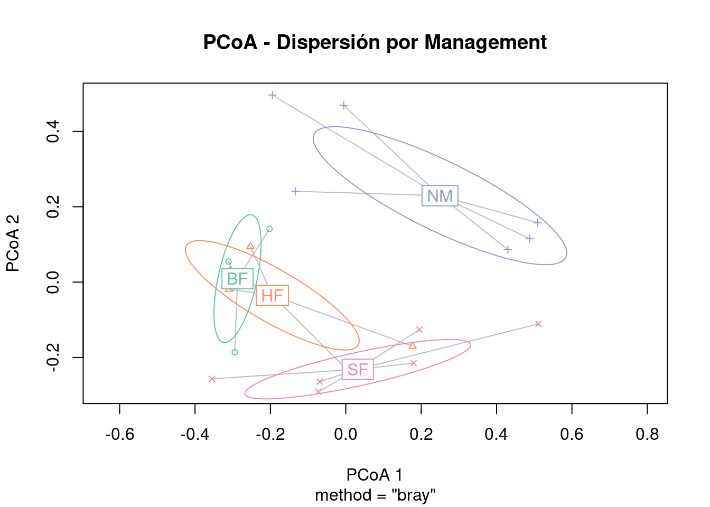
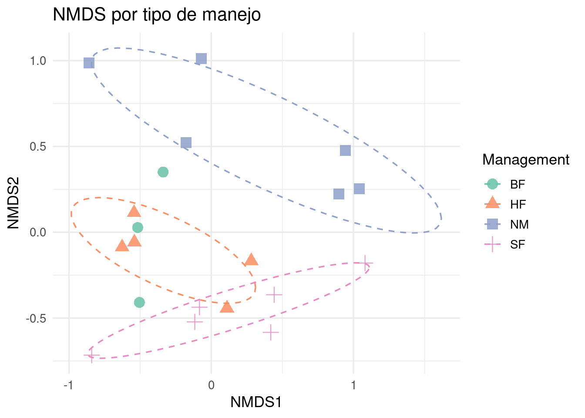
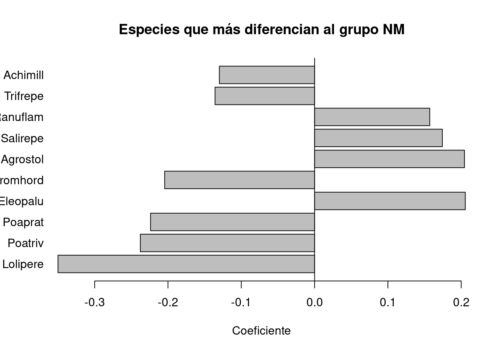

library(vegan)Cargando paquete requerido: permutelibrary(RRPP)
library(ggplot2)
library(RColorBrewer)
library(pairwiseAdonis)Cargando paquete requerido: clusterEn la primera parte vimos el mapa conceptual general de diferenciación multivariada.
En esta segunda parte trabajamos con el dataset dune y aplicamos los métodos de forma práctica:
La pregunta general es:
¿Los grupos definidos por variables ambientales o de manejo ayudan a explicar diferencias en la composición de especies?
library(vegan)Cargando paquete requerido: permutelibrary(RRPP)
library(ggplot2)
library(RColorBrewer)
library(pairwiseAdonis)Cargando paquete requerido: clusterSi pairwiseAdonis no se instala de forma normal, se puede instalar desde GitHub. Esto solo hace falta una vez.
# install.packages("devtools")
# library(devtools)
# install_github("pmartinezarbizu/pairwiseAdonis/pairwiseAdonis")Cargamos los datos:
data(dune)
data(dune.env)dune es la matriz de especies:
dune.env contiene información ambiental de esos mismos sitios.
head(dune) Achimill Agrostol Airaprae Alopgeni Anthodor Bellpere Bromhord Chenalbu
1 1 0 0 0 0 0 0 0
2 3 0 0 2 0 3 4 0
3 0 4 0 7 0 2 0 0
4 0 8 0 2 0 2 3 0
5 2 0 0 0 4 2 2 0
6 2 0 0 0 3 0 0 0
Cirsarve Comapalu Eleopalu Elymrepe Empenigr Hyporadi Juncarti Juncbufo
1 0 0 0 4 0 0 0 0
2 0 0 0 4 0 0 0 0
3 0 0 0 4 0 0 0 0
4 2 0 0 4 0 0 0 0
5 0 0 0 4 0 0 0 0
6 0 0 0 0 0 0 0 0
Lolipere Planlanc Poaprat Poatriv Ranuflam Rumeacet Sagiproc Salirepe
1 7 0 4 2 0 0 0 0
2 5 0 4 7 0 0 0 0
3 6 0 5 6 0 0 0 0
4 5 0 4 5 0 0 5 0
5 2 5 2 6 0 5 0 0
6 6 5 3 4 0 6 0 0
Scorautu Trifprat Trifrepe Vicilath Bracruta Callcusp
1 0 0 0 0 0 0
2 5 0 5 0 0 0
3 2 0 2 0 2 0
4 2 0 1 0 2 0
5 3 2 2 0 2 0
6 3 5 5 0 6 0head(dune.env) A1 Moisture Management Use Manure
1 2.8 1 SF Haypastu 4
2 3.5 1 BF Haypastu 2
3 4.3 2 SF Haypastu 4
4 4.2 2 SF Haypastu 4
5 6.3 1 HF Hayfield 2
6 4.3 1 HF Haypastu 2str(dune.env)'data.frame': 20 obs. of 5 variables:
$ A1 : num 2.8 3.5 4.3 4.2 6.3 4.3 2.8 4.2 3.7 3.3 ...
$ Moisture : Ord.factor w/ 4 levels "1"<"2"<"4"<"5": 1 1 2 2 1 1 1 4 3 2 ...
$ Management: Factor w/ 4 levels "BF","HF","NM",..: 4 1 4 4 2 2 2 2 2 1 ...
$ Use : Ord.factor w/ 3 levels "Hayfield"<"Haypastu"<..: 2 2 2 2 1 2 3 3 1 1 ...
$ Manure : Ord.factor w/ 5 levels "0"<"1"<"2"<"3"<..: 5 3 5 5 3 3 4 4 2 2 ...La variable Moisture viene como factor ordenado. Para algunos análisis la usamos también como número.
dune.env$Moisture_num <- as.numeric(as.character(dune.env$Moisture))
table(dune.env$Moisture)
1 2 4 5
7 4 2 7 dune.env$Moisture_num [1] 1 1 2 2 1 1 1 5 4 2 1 4 5 5 5 5 2 1 5 5Calculamos la matriz de disimilitud Bray-Curtis.
dist_bc <- vegdist(dune, method = "bray")
as.matrix(dist_bc)[1:5, 1:5] 1 2 3 4 5
1 0.0000000 0.4666667 0.4482759 0.5238095 0.6393443
2 0.4666667 0.0000000 0.3414634 0.3563218 0.4117647
3 0.4482759 0.3414634 0.0000000 0.2705882 0.4698795
4 0.5238095 0.3563218 0.2705882 0.0000000 0.5000000
5 0.6393443 0.4117647 0.4698795 0.5000000 0.0000000Bray-Curtis mide qué tan distinta es la composición de especies entre dos sitios.
MRPP usa una matriz de distancias.
La pregunta es:
¿Los sitios del mismo grupo se parecen más entre sí que si los grupos fueran armados al azar?
La hipótesis nula es:
Agrupar los sitios de esta manera no mejora nada respecto al azar.
Si el p-valor es bajo, interpretamos que los sitios dentro de cada grupo se parecen más entre sí de lo esperado por azar.
Managementmrpp_management <- mrpp(
dist_bc,
dune.env$Management,
permutations = 999
)
mrpp_management
Call:
mrpp(dat = dist_bc, grouping = dune.env$Management, permutations = 999)
Dissimilarity index: bray
Weights for groups: n
Class means and counts:
BF HF NM SF
delta 0.416 0.4418 0.6882 0.5813
n 3 5 6 6
Chance corrected within-group agreement A: 0.1424
Based on observed delta 0.5537 and expected delta 0.6456
Significance of delta: 0.002
Permutation: free
Number of permutations: 999Interpretación esperada:
Management agrupa sitios que se parecen internamente;A sirve sobre todo para comparar factores, no para leerlo aislado como alto o bajo.Moisturemrpp_moisture <- mrpp(
dist_bc,
dune.env$Moisture,
permutations = 999
)
mrpp_moisture
Call:
mrpp(dat = dist_bc, grouping = dune.env$Moisture, permutations = 999)
Dissimilarity index: bray
Weights for groups: n
Class means and counts:
1 2 4 5
delta 0.4911 0.6049 0.3506 0.5775
n 7 4 2 7
Chance corrected within-group agreement A: 0.179
Based on observed delta 0.5301 and expected delta 0.6456
Significance of delta: 0.001
Permutation: free
Number of permutations: 999Comparamos A entre factores:
mrpp_management$A[1] 0.1423836mrpp_moisture$A[1] 0.1790282En las salidas trabajadas, Moisture tuvo un A un poco mayor que Management. Por lo tanto, según MRPP, la humedad agrupó los sitios un poco mejor que el manejo.
PERMANOVA trabaja con una matriz de distancias, pero usa una lógica parecida al ANOVA.
Pregunta:
¿El factor ayuda a explicar las diferencias entre sitios?
En esta salida, el valor R2 indica qué proporción de las diferencias entre sitios queda asociada al factor.
Managementperm_management <- adonis2(
dist_bc ~ Management,
data = dune.env,
permutations = 999,
by = "terms"
)
perm_managementPermutation test for adonis under reduced model
Terms added sequentially (first to last)
Permutation: free
Number of permutations: 999
adonis2(formula = dist_bc ~ Management, data = dune.env, permutations = 999, by = "terms")
Df SumOfSqs R2 F Pr(>F)
Management 3 1.4686 0.34161 2.7672 0.003 **
Residual 16 2.8304 0.65839
Total 19 4.2990 1.00000
---
Signif. codes: 0 '***' 0.001 '**' 0.01 '*' 0.05 '.' 0.1 ' ' 1Lectura:
R2: parte de las diferencias entre sitios asociada a Management;Pr(>F): p-valor por permutaciones.Moisture_numperm_moisture <- adonis2(
dist_bc ~ Moisture_num,
data = dune.env,
permutations = 999,
by = "terms"
)
perm_moisturePermutation test for adonis under reduced model
Terms added sequentially (first to last)
Permutation: free
Number of permutations: 999
adonis2(formula = dist_bc ~ Moisture_num, data = dune.env, permutations = 999, by = "terms")
Df SumOfSqs R2 F Pr(>F)
Moisture_num 1 1.3916 0.32369 8.6152 0.001 ***
Residual 18 2.9075 0.67631
Total 19 4.2990 1.00000
---
Signif. codes: 0 '***' 0.001 '**' 0.01 '*' 0.05 '.' 0.1 ' ' 1En las salidas trabajadas, ambos factores dieron p-valores bajos y R2 parecidos:
Management -> R2 cercano a 0.34
Moisture -> R2 cercano a 0.32Entonces, en modelos separados, ambos factores ayudan a explicar diferencias en la composición de especies.
Cuando usamos más de una variable explicativa, aparece un problema nuevo:
las variables pueden compartir parte de la explicación.
Por ejemplo, parte de las diferencias entre sitios puede estar relacionada tanto con Management como con Moisture_num.
by = "terms": importa el ordenCon by = "terms", las variables entran en orden.
La primera variable toma primero la variación que puede explicar. La segunda explica lo que queda.
perm_complex <- adonis2(
dist_bc ~ Management * Moisture_num,
data = dune.env,
permutations = 999,
by = "terms"
)
perm_complexPermutation test for adonis under reduced model
Terms added sequentially (first to last)
Permutation: free
Number of permutations: 999
adonis2(formula = dist_bc ~ Management * Moisture_num, data = dune.env, permutations = 999, by = "terms")
Df SumOfSqs R2 F Pr(>F)
Management 3 1.4686 0.34161 3.7483 0.001 ***
Moisture_num 1 0.9425 0.21924 7.2166 0.001 ***
Management:Moisture_num 3 0.3207 0.07460 0.8186 0.661
Residual 12 1.5672 0.36455
Total 19 4.2990 1.00000
---
Signif. codes: 0 '***' 0.001 '**' 0.01 '*' 0.05 '.' 0.1 ' ' 1Ahora invertimos el orden:
perm_complex2 <- adonis2(
dist_bc ~ Moisture_num * Management,
data = dune.env,
permutations = 999,
by = "terms"
)
perm_complex2Permutation test for adonis under reduced model
Terms added sequentially (first to last)
Permutation: free
Number of permutations: 999
adonis2(formula = dist_bc ~ Moisture_num * Management, data = dune.env, permutations = 999, by = "terms")
Df SumOfSqs R2 F Pr(>F)
Moisture_num 1 1.3916 0.32369 10.6551 0.001 ***
Management 3 1.0195 0.23715 2.6021 0.005 **
Moisture_num:Management 3 0.3207 0.07460 0.8186 0.631
Residual 12 1.5672 0.36455
Total 19 4.2990 1.00000
---
Signif. codes: 0 '***' 0.001 '**' 0.01 '*' 0.05 '.' 0.1 ' ' 1La comparación entre ambos modelos muestra si el orden cambia cuánto se le asigna a cada variable.
Si el R2 cambia al invertir el orden, eso indica que las variables comparten parte de la explicación.
by = "margin": cada variable considerando la otraperm_complex_typeIII <- adonis2(
dist_bc ~ Moisture_num + Management,
data = dune.env,
permutations = 999,
by = "margin"
)
perm_complex_typeIIIPermutation test for adonis under reduced model
Marginal effects of terms
Permutation: free
Number of permutations: 999
adonis2(formula = dist_bc ~ Moisture_num + Management, data = dune.env, permutations = 999, by = "margin")
Df SumOfSqs R2 F Pr(>F)
Moisture_num 1 0.9425 0.21924 7.4883 0.001 ***
Management 3 1.0195 0.23715 2.7001 0.007 **
Residual 15 1.8879 0.43915
Total 19 4.2990 1.00000
---
Signif. codes: 0 '***' 0.001 '**' 0.01 '*' 0.05 '.' 0.1 ' ' 1Con by = "margin", la pregunta es:
Moisture_num aporta algo después de considerar Management?Management aporta algo después de considerar Moisture_num?En las salidas trabajadas, ambos factores siguieron siendo importantes. Esto indica que humedad y manejo aportan información propia, aunque comparten parte de la explicación.
Este tema aparece porque, cuando hay más de una variable explicativa, hay que decidir cómo repartir la parte de variación que puede estar compartida.
Tipo I = importa el orden.
Tipo II = cada término se evalúa considerando los otros términos principales.
Tipo III = cada término se evalúa considerando todo lo demás, incluidas interacciones.Evalúa los términos en orden.
La primera variable toma primero la variación que puede explicar, y la segunda explica lo que queda.
Sirve cuando el orden tiene sentido.
Evalúa cada término teniendo en cuenta los otros términos principales, pero sin considerar interacciones.
Sirve para preguntar si cada variable aporta algo propio sin depender tanto del orden de escritura.
Evalúa cada término teniendo en cuenta todos los demás términos del modelo, incluidas las interacciones.
Es útil en modelos complejos, pero puede ser difícil de interpretar si hay interacción.
En adonis2, by = "margin" se parece a una evaluación marginal para modelos simples, pero el script aclara que adonis2 no maneja bien sumas tipo III con interacciones. Para modelos más complejos, especialmente con interacciones, se usa RRPP.
A1 y ManagementEste bloque repite la idea anterior usando A1 como variable ambiental previa.
La pregunta es:
Después de considerar A1, ¿Management todavía ayuda a explicar diferencias en composición?
perm_ancova <- adonis2(
dist_bc ~ A1 + Management,
data = dune.env,
by = "terms"
)
perm_ancovaPermutation test for adonis under reduced model
Terms added sequentially (first to last)
Permutation: free
Number of permutations: 999
adonis2(formula = dist_bc ~ A1 + Management, data = dune.env, by = "terms")
Df SumOfSqs R2 F Pr(>F)
A1 1 0.7230 0.16817 4.5382 0.001 ***
Management 3 1.1865 0.27600 2.4828 0.004 **
Residual 15 2.3895 0.55583
Total 19 4.2990 1.00000
---
Signif. codes: 0 '***' 0.001 '**' 0.01 '*' 0.05 '.' 0.1 ' ' 1Con by = "terms", A1 entra primero y Management explica lo que queda.
perm_tipoIII <- adonis2(
dist_bc ~ A1 + Management,
data = dune.env,
by = "margin"
)
perm_tipoIIIPermutation test for adonis under reduced model
Marginal effects of terms
Permutation: free
Number of permutations: 999
adonis2(formula = dist_bc ~ A1 + Management, data = dune.env, by = "margin")
Df SumOfSqs R2 F Pr(>F)
A1 1 0.4409 0.10256 2.7676 0.028 *
Management 3 1.1865 0.27600 2.4828 0.005 **
Residual 15 2.3895 0.55583
Total 19 4.2990 1.00000
---
Signif. codes: 0 '***' 0.001 '**' 0.01 '*' 0.05 '.' 0.1 ' ' 1Con by = "margin", cada término se evalúa considerando el otro.
PERMANOVA puede dar significativa por dos razones:
PERMDISP revisa la segunda posibilidad.
Pregunta:
¿Los grupos tienen distinta dispersión interna?
Hipótesis nula:
Los grupos tienen la misma dispersión.
Managementdisp_management <- betadisper(
dist_bc,
dune.env$Management
)
disp_management
Homogeneity of multivariate dispersions
Call: betadisper(d = dist_bc, group = dune.env$Management)
No. of Positive Eigenvalues: 14
No. of Negative Eigenvalues: 5
Average distance to median:
BF HF NM SF
0.2196 0.2791 0.4510 0.3640
Eigenvalues for PCoA axes:
(Showing 8 of 19 eigenvalues)
PCoA1 PCoA2 PCoA3 PCoA4 PCoA5 PCoA6 PCoA7 PCoA8
1.71627 1.02240 0.46146 0.38225 0.27913 0.23663 0.16912 0.09625 La parte más importante del resumen es Average distance to median. Esa distancia funciona como una medida de desparramo interno.
permutest(
disp_management,
permutations = 999
)
Permutation test for homogeneity of multivariate dispersions
Permutation: free
Number of permutations: 999
Response: Distances
Df Sum Sq Mean Sq F N.Perm Pr(>F)
Groups 3 0.13831 0.046104 1.9506 999 0.16
Residuals 16 0.37816 0.023635 Si el p-valor no es bajo, no encontramos evidencia clara de diferencias de dispersión entre los grupos.
También se puede hacer un ANOVA clásico sobre esas distancias al centro del grupo:
anova(disp_management)Analysis of Variance Table
Response: Distances
Df Sum Sq Mean Sq F value Pr(>F)
Groups 3 0.13831 0.046104 1.9506 0.1622
Residuals 16 0.37816 0.023635 Como venimos trabajando con permutaciones, usamos permutest() como referencia principal.
boxplot(
disp_management,
main = "Dispersión intragrupo por Management",
ylab = "Distancia al centro del grupo",
col = brewer.pal(4, "Set2"),
las = 2
)
plot(
disp_management,
hull = FALSE,
ellipse = TRUE,
main = "PCoA - Dispersión por Management",
col = brewer.pal(4, "Set2")
)
Moisturedisp_moisture <- betadisper(
dist_bc,
dune.env$Moisture
)
disp_moisture
Homogeneity of multivariate dispersions
Call: betadisper(d = dist_bc, group = dune.env$Moisture)
No. of Positive Eigenvalues: 14
No. of Negative Eigenvalues: 5
Average distance to median:
1 2 4 5
0.3211 0.3605 0.1753 0.3706
Eigenvalues for PCoA axes:
(Showing 8 of 19 eigenvalues)
PCoA1 PCoA2 PCoA3 PCoA4 PCoA5 PCoA6 PCoA7 PCoA8
1.71627 1.02240 0.46146 0.38225 0.27913 0.23663 0.16912 0.09625 permutest(
disp_moisture,
permutations = 999
)
Permutation test for homogeneity of multivariate dispersions
Permutation: free
Number of permutations: 999
Response: Distances
Df Sum Sq Mean Sq F N.Perm Pr(>F)
Groups 3 0.06361 0.021205 0.8443 999 0.491
Residuals 16 0.40182 0.025114 En las salidas trabajadas, PERMDISP no fue significativo ni para Management ni para Moisture. Esto permite interpretar con más tranquilidad los resultados de PERMANOVA: las diferencias no parecen deberse principalmente a distinto desparramo interno de los grupos.
NMDS no es otro test. Es una visualización.
Sirve para dibujar los sitios en dos dimensiones tratando de respetar las distancias originales.
sitios parecidos -> quedan cerca
sitios distintos -> quedan lejosnMDS <- metaMDS(
dune,
distance = "bray",
k = 2,
trymax = 100
)Run 0 stress 0.1192678
Run 1 stress 0.1812933
Run 2 stress 0.1183186
... New best solution
... Procrustes: rmse 0.02027181 max resid 0.06496881
Run 3 stress 0.1889641
Run 4 stress 0.1183186
... New best solution
... Procrustes: rmse 2.276756e-05 max resid 7.292226e-05
... Similar to previous best
Run 5 stress 0.1192678
Run 6 stress 0.1192679
Run 7 stress 0.1183186
... New best solution
... Procrustes: rmse 6.34368e-06 max resid 2.060584e-05
... Similar to previous best
Run 8 stress 0.1183186
... Procrustes: rmse 1.878986e-05 max resid 5.354683e-05
... Similar to previous best
Run 9 stress 0.1809577
Run 10 stress 0.1183186
... Procrustes: rmse 1.665597e-05 max resid 5.350812e-05
... Similar to previous best
Run 11 stress 0.192224
Run 12 stress 0.2375255
Run 13 stress 0.1183186
... New best solution
... Procrustes: rmse 4.155377e-06 max resid 1.363527e-05
... Similar to previous best
Run 14 stress 0.1183186
... Procrustes: rmse 1.981569e-06 max resid 6.867498e-06
... Similar to previous best
Run 15 stress 0.1192678
Run 16 stress 0.1192678
Run 17 stress 0.1192678
Run 18 stress 0.1192678
Run 19 stress 0.1192678
Run 20 stress 0.1183186
... Procrustes: rmse 1.894142e-06 max resid 5.867212e-06
... Similar to previous best
*** Best solution repeated 3 timesnMDS$stress[1] 0.1183186El stress indica qué tan bien el gráfico en dos dimensiones representa las distancias originales.
stress < 0.10 -> muy bueno
stress < 0.20 -> aceptable
stress > 0.20 -> interpretar con cuidadoscores_sites <- as.data.frame(scores(nMDS, display = "sites"))
scores_sites$Management <- dune.env$Management
scores_sites$Moisture <- dune.env$MoistureManagementggplot(
scores_sites,
aes(
x = NMDS1,
y = NMDS2,
color = Management,
shape = Management
)
) +
geom_point(size = 4, alpha = 0.85) +
stat_ellipse(
aes(group = Management),
level = 0.7,
linetype = 2
) +
scale_color_brewer(palette = "Set2") +
theme_minimal(base_size = 13) +
labs(
title = "NMDS por tipo de manejo",
x = "NMDS1",
y = "NMDS2"
)Too few points to calculate an ellipseWarning: Removed 1 row containing missing values or values outside the scale range
(`geom_path()`).
El NMDS ayuda a visualizar si los grupos aparecen separados, mezclados o con distinta dispersión. No reemplaza a PERMANOVA ni a PERMDISP.
RRPP ajusta modelos multivariados usando permutaciones.
La diferencia principal con ANOSIM, MRPP y PERMANOVA es que RRPP no parte directamente de una matriz de distancias. En RRPP volvemos a trabajar con las variables respuesta dentro de un modelo.
En dune, las variables respuesta son las especies. El grupo o factor puede ser Management.
respuesta multivariada ~ grupo o factorPor ejemplo:
abundancias de especies ~ ManagementUna forma simple de pensarlo es:
dato observado = parte explicada por el modelo + residuoEl residuo es lo que el modelo no pudo explicar.
Para probar si un factor importa, RRPP usa dos modelos:
modelo reducido = modelo sin el factor que queremos probar
modelo completo = modelo con el factor agregadoSi queremos probar si Management aporta información:
modelo reducido: composición ~ 1
modelo completo: composición ~ ManagementEl modelo reducido no usa Management. Representa la idea de que el manejo no importa.
RRPP toma los valores esperados por ese modelo reducido, mezcla sus residuos y vuelve a armar datos simulados:
datos simulados = valores esperados del modelo reducido + residuos mezcladosDespués ajusta el modelo completo sobre esos datos simulados y calcula el estadístico de prueba. Repite esto muchas veces para construir una referencia de azar.
Supongamos una sola variable para ver la mecánica:
sitio grupo sp1
1 A 10
2 A 12
3 B 20
4 B 22Queremos probar si grupo explica sp1.
El modelo completo sería:
sp1 ~ grupoPero para construir el azar, RRPP parte del modelo reducido:
sp1 ~ 1Ese modelo reducido solo calcula una media general:
media general = (10 + 12 + 20 + 22) / 4 = 16Residuos:
sitio observado esperado residuo
1 10 16 -6
2 12 16 -4
3 20 16 4
4 22 16 6RRPP mezcla esos residuos. Por ejemplo:
residuos mezclados: 4, -6, 6, -4Rearma datos simulados:
sitio grupo esperado residuo mezclado simulado
1 A 16 4 20
2 A 16 -6 10
3 B 16 6 22
4 B 16 -4 12Con esa tabla simulada vuelve a ajustar el modelo completo:
sp1_simulado ~ grupoSi el resultado real es mucho más fuerte que la mayoría de los resultados simulados, el p-valor será bajo.
En dune tenemos abundancias de especies. Para RRPP usamos transformación Hellinger:
dune_hel <- as.matrix(
decostand(dune, method = "hellinger")
)Hellinger prepara datos de abundancia para analizarlos con una lógica euclidiana. No se usa siempre; acá tiene sentido porque estamos trabajando con abundancias de especies.
Managementfit_management <- lm.rrpp(
dune_hel ~ Management,
data = dune.env
)
anova(fit_management)
Analysis of Variance, using Residual Randomization
Permutation procedure: Randomization of null model residuals
Number of permutations: 1000
Estimation method: Ordinary Least Squares
Sums of Squares and Cross-products: Type I
Effect sizes (Z) based on F distributions
Df SS MS Rsq F Z Pr(>F)
Management 3 3.1672 1.05572 0.29986 2.2842 2.7403 0.002 **
Residuals 16 7.3950 0.46219 0.70014
Total 19 10.5621
---
Signif. codes: 0 '***' 0.001 '**' 0.01 '*' 0.05 '.' 0.1 ' ' 1
Call: lm.rrpp(f1 = dune_hel ~ Management, data = dune.env)Interpretación:
Rsq: proporción de la variación asociada a Management;F: comparación entre lo explicado por Management y lo que queda sin explicar;Z: tamaño de efecto estandarizado respecto de la distribución por permutación;Pr(>F): p-valor.Si el p-valor es bajo, interpretamos que la composición de especies se relaciona con el tipo de manejo.
Después de Hellinger, podemos comparar RRPP con PERMANOVA usando distancia euclidiana.
adonis2(
dune_hel ~ Management,
data = dune.env,
method = "euclidean"
)Permutation test for adonis under reduced model
Permutation: free
Number of permutations: 999
adonis2(formula = dune_hel ~ Management, data = dune.env, method = "euclidean")
Df SumOfSqs R2 F Pr(>F)
Model 3 3.1672 0.29986 2.2842 0.002 **
Residual 16 7.3950 0.70014
Total 19 10.5621 1.00000
---
Signif. codes: 0 '***' 0.001 '**' 0.01 '*' 0.05 '.' 0.1 ' ' 1En las salidas trabajadas, RRPP y PERMANOVA dieron resultados prácticamente iguales para este caso simple. Eso muestra que ambos métodos apuntan a la misma conclusión.
fit_ancova <- lm.rrpp(
dune_hel ~ Moisture_num + Management,
data = dune.env,
SS.type = "I"
)
anova(fit_ancova)
Analysis of Variance, using Residual Randomization
Permutation procedure: Randomization of null model residuals
Number of permutations: 1000
Estimation method: Ordinary Least Squares
Sums of Squares and Cross-products: Type I
Effect sizes (Z) based on F distributions
Df SS MS Rsq F Z Pr(>F)
Moisture_num 1 2.6702 2.67016 0.25281 7.2355 4.0503 0.001 ***
Management 3 2.3564 0.78548 0.22310 2.1285 2.9148 0.003 **
Residuals 15 5.5355 0.36904 0.52409
Total 19 10.5621
---
Signif. codes: 0 '***' 0.001 '**' 0.01 '*' 0.05 '.' 0.1 ' ' 1
Call: lm.rrpp(f1 = dune_hel ~ Moisture_num + Management, SS.type = "I",
data = dune.env)Con tipo I, importa el orden:
primero Moisture_num
luego ManagementLa pregunta sobre Management es:
Después de considerar la humedad, ¿el manejo todavía aporta información?
fit_tipo2 <- lm.rrpp(
dune_hel ~ Management + Moisture_num,
data = dune.env,
SS.type = "II"
)
anova(fit_tipo2)
Analysis of Variance, using Residual Randomization
Permutation procedure: Randomization of null model residuals
Number of permutations: 1000
Estimation method: Ordinary Least Squares
Sums of Squares and Cross-products: Type II
Effect sizes (Z) based on F distributions
Df SS MS Rsq F Z Pr(>F)
Management 3 2.3564 0.78548 0.22310 2.1285 2.9148 0.003 **
Moisture_num 1 1.8594 1.85944 0.17605 5.0387 3.5098 0.001 ***
Residuals 15 5.5355 0.36904 0.52409
Total 19 10.5621
---
Signif. codes: 0 '***' 0.001 '**' 0.01 '*' 0.05 '.' 0.1 ' ' 1
Call: lm.rrpp(f1 = dune_hel ~ Management + Moisture_num, SS.type = "II",
data = dune.env)Con tipo II, cada término se evalúa considerando los otros términos principales.
La pregunta es:
Management aporta algo considerando Moisture_num?Moisture_num aporta algo considerando Management?En las salidas trabajadas, ambos factores siguieron siendo importantes. Esto indica que humedad y manejo aportan información propia.
Esta parte no es el test principal. El test principal es anova(fit_management).
Los coeficientes sirven para explorar qué variables respuesta cambian más entre grupos.
En dune, las variables respuesta son especies. Entonces podemos mirar qué especies diferencian más a un grupo.
coefs <- coef(fit_management)
coefs Achimill Agrostol Airaprae Alopgeni Anthodor Bellpere
(Intercept) 0.1907528 0.0000000 0.0000000 0.07273930 0.10166571 0.16097560
ManagementHF -0.0620735 0.1166978 0.0000000 0.05142363 0.05405507 -0.11784249
ManagementNM -0.1298947 0.2044811 0.1127056 -0.07273930 0.04426902 -0.11561467
ManagementSF -0.1514691 0.3209570 0.0000000 0.23470150 -0.10166571 -0.08857138
Bromhord Chenalbu Cirsarve Comapalu Eleopalu Elymrepe
(Intercept) 0.2045346 0.00000000 0.00000000 0.00000000 0.00000000 0.10286890
ManagementHF -0.1166801 0.00000000 0.00000000 0.00000000 0.06324555 0.03372342
ManagementNM -0.2045346 0.00000000 0.00000000 0.09725984 0.20561855 -0.10286890
ManagementSF -0.1615015 0.02901294 0.03513642 0.00000000 0.08206099 0.07809355
Empenigr Hyporadi Juncarti Juncbufo Lolipere
(Intercept) 0.00000000 0.08333333 0.00000000 0.0000000 0.39542788
ManagementHF 0.00000000 -0.08333333 0.12496689 0.1064427 -0.09723529
ManagementNM 0.04233338 0.04445967 0.12006136 0.0000000 -0.35006696
ManagementSF 0.00000000 -0.08333333 0.05025189 0.1065955 -0.17138767
Planlanc Poaprat Poatriv Ranuflam Rumeacet
(Intercept) 0.19010716 0.32238574 0.23774848 0.00000000 0.00000000
ManagementHF 0.01335267 -0.04104019 0.09765807 0.04472136 0.23732595
ManagementNM -0.07369355 -0.22379704 -0.23774848 0.15712828 0.00000000
ManagementSF -0.19010716 -0.09417186 0.12232530 0.08206099 0.03984095
Sagiproc Salirepe Scorautu Trifprat Trifrepe
(Intercept) 0.083333333 0.0000000 0.33481759 0.0000000 0.34158756
ManagementHF 0.005031604 0.0000000 -0.07880244 0.1524042 -0.09100976
ManagementNM -0.031485749 0.1743381 0.01067916 0.0000000 -0.13580753
ManagementSF 0.069596336 0.0000000 -0.18154192 0.0000000 -0.18964906
Vicilath Bracruta Callcusp
(Intercept) 0.1341662 0.189739646 0.00000000
ManagementHF -0.1341662 0.057190439 0.00000000
ManagementNM -0.1020912 0.070048598 0.11988897
ManagementSF -0.1341662 -0.002965925 0.05025189Como Management es un factor, R toma un nivel como referencia.
El intercepto representa el grupo de referencia.
Los coeficientes ManagementHF, ManagementNM, ManagementSF, etc., indican cuánto cambia cada grupo respecto al grupo de referencia, especie por especie.
NMcoef_NM <- coefs["ManagementNM", ]
top10 <- sort(
abs(coef_NM),
decreasing = TRUE
)[1:10]
barplot(
coef_NM[names(top10)],
horiz = TRUE,
las = 1,
xlab = "Coeficiente",
main = "Especies que más diferencian al grupo NM"
)
abline(v = 0, lty = 1)
Lectura:
NM que en el grupo de referencia;NM que en el grupo de referencia.Cuando el análisis global da significativo, sabemos que hay diferencias entre grupos, pero no sabemos entre cuáles.
Las comparaciones de a pares responden:
¿Qué grupos difieren entre sí?
pares_adonis <- pairwise.adonis2(
dist_bc ~ Management,
data = dune.env
)
pares_adonis$parent_call
[1] "dist_bc ~ Management , strata = Null , permutations 999"
$SF_vs_BF
Df SumOfSqs R2 F Pr(>F)
Model 1 0.40166 0.26431 2.5149 0.048 *
Residual 7 1.11800 0.73569
Total 8 1.51966 1.00000
---
Signif. codes: 0 '***' 0.001 '**' 0.01 '*' 0.05 '.' 0.1 ' ' 1
$SF_vs_HF
Df SumOfSqs R2 F Pr(>F)
Model 1 0.28288 0.17108 1.8575 0.114
Residual 9 1.37063 0.82892
Total 10 1.65351 1.00000
$SF_vs_NM
Df SumOfSqs R2 F Pr(>F)
Model 1 0.75757 0.25516 3.4257 0.007 **
Residual 10 2.21144 0.74484
Total 11 2.96902 1.00000
---
Signif. codes: 0 '***' 0.001 '**' 0.01 '*' 0.05 '.' 0.1 ' ' 1
$BF_vs_HF
Df SumOfSqs R2 F Pr(>F)
Model 1 0.16171 0.20714 1.5675 0.194
Residual 6 0.61899 0.79286
Total 7 0.78070 1.00000
$BF_vs_NM
Df SumOfSqs R2 F Pr(>F)
Model 1 0.56625 0.27948 2.7152 0.024 *
Residual 7 1.45980 0.72052
Total 8 2.02605 1.00000
---
Signif. codes: 0 '***' 0.001 '**' 0.01 '*' 0.05 '.' 0.1 ' ' 1
$HF_vs_NM
Df SumOfSqs R2 F Pr(>F)
Model 1 0.65131 0.27554 3.4231 0.028 *
Residual 9 1.71243 0.72446
Total 10 2.36374 1.00000
---
Signif. codes: 0 '***' 0.001 '**' 0.01 '*' 0.05 '.' 0.1 ' ' 1
attr(,"class")
[1] "pwadstrata" "list" Como hacemos muchas comparaciones, aumenta la posibilidad de encontrar diferencias por azar. Por eso corregimos los p-valores.
p_vals <- sapply(
pares_adonis[-1],
function(x) x$`Pr(>F)`[1]
)
tabla_pares <- data.frame(
p_original = round(p_vals, 4),
p_bonferroni = round(p.adjust(p_vals, "bonferroni"), 4),
p_holm = round(p.adjust(p_vals, "holm"), 4),
p_BH = round(p.adjust(p_vals, "BH"), 4)
)
tabla_pares p_original p_bonferroni p_holm p_BH
SF_vs_BF 0.048 0.288 0.144 0.0720
SF_vs_HF 0.114 0.684 0.228 0.1368
SF_vs_NM 0.007 0.042 0.042 0.0420
BF_vs_HF 0.194 1.000 0.228 0.1940
BF_vs_NM 0.024 0.144 0.120 0.0560
HF_vs_NM 0.028 0.168 0.120 0.0560Lectura esperada:
fit_reducido <- lm.rrpp(
dune_hel ~ 1,
data = dune.env
)
pares_rrpp <- pairwise(
fit = fit_management,
fit.null = fit_reducido,
groups = dune.env$Management
)
summary(pares_rrpp)
Pairwise comparisons
Groups: BF HF NM SF
RRPP: 1000 permutations
LS means:
Vectors hidden (use show.vectors = TRUE to view)
Pairwise distances between means, plus statistics
d UCL (95%) Z Pr > d
BF:HF 0.4772439 0.7448397 -0.4422805 0.666
BF:NM 0.7438183 0.7197926 1.8234433 0.035
BF:SF 0.6730646 0.7159854 1.3830865 0.089
HF:NM 0.7021404 0.6181481 2.2632438 0.008
HF:SF 0.5147286 0.6198228 0.8464591 0.200
NM:SF 0.7279207 0.6001468 2.4825507 0.006Este resumen compara diferencias entre medias multivariadas de los grupos.
summary(
pares_rrpp,
test.type = "var"
)
Pairwise comparisons
Groups: BF HF NM SF
RRPP: 1000 permutations
Observed variances by group
BF HF NM SF
0.2200206 0.2703407 0.5064440 0.3907578
Pairwise distances between variances, plus statistics
d UCL (95%) Z Pr > d
BF:HF 0.05032013 0.2572930 -0.6275096 0.721
BF:NM 0.28642347 0.2443617 1.9441913 0.015
BF:SF 0.17073723 0.2508085 0.9352249 0.203
HF:NM 0.23610334 0.2147762 1.7851724 0.022
HF:SF 0.12041711 0.2160314 0.5889948 0.297
NM:SF 0.11568623 0.2047301 0.6542039 0.284Este análisis no compara medias multivariadas. Compara dispersión interna entre pares de grupos.
Sirve como complemento, parecido a PERMDISP.
Esta tabla sirve como cierre.
No todos los estadísticos están en la misma escala, por lo que no se deben comparar directamente como si fueran iguales.
La tabla sirve para ver si los métodos coinciden en la conclusión general.
anosim_management <- anosim(
dist_bc,
dune.env$Management,
permutations = 999
)
tabla_metodos <- data.frame(
metodo = c(
"ANOSIM - R",
"MRPP - A",
"PERMANOVA - R2",
"RRPP - Z"
),
efecto = c(
anosim_management$statistic,
mrpp_management$A,
perm_management$R2[1],
anova(fit_management)$table$Z[1]
),
p_valor = c(
anosim_management$signif,
mrpp_management$Pvalue,
perm_management$`Pr(>F)`[1],
anova(fit_management)$table$`Pr(>F)`[1]
)
)
tabla_metodos metodo efecto p_valor
1 ANOSIM - R 0.2578706 0.009
2 MRPP - A 0.1423836 0.002
3 PERMANOVA - R2 0.3416107 0.003
4 RRPP - Z 2.7402791 0.002También podemos mirar el R2 de RRPP:
anova(fit_management)$table$Rsq[1][1] 0.2998597Lectura:
R;A;R2;Z y también tiene Rsq.La tabla no sirve para decir qué método tiene “más efecto”. Sirve para ver si todos apuntan a la misma conclusión.
Este ejercicio queda para resolver después de entender la lógica con dune.
data(penguins)
?penguins
peng <- na.omit(penguins)
table(peng$species, peng$island)Consignas: